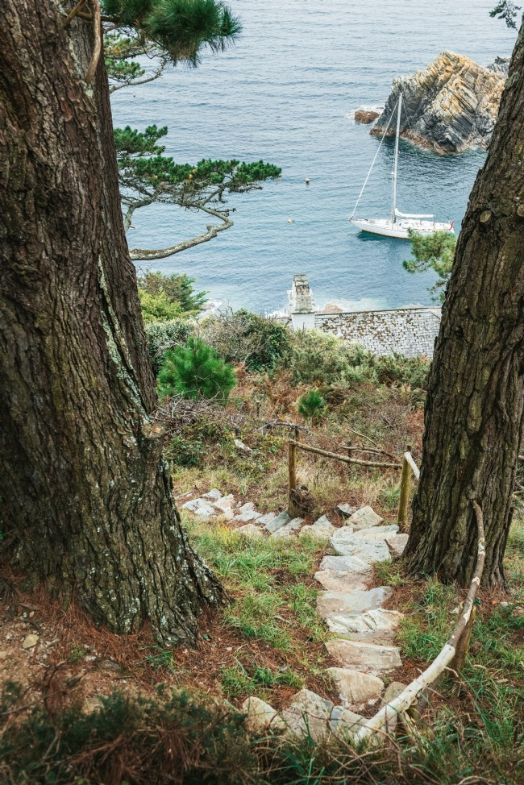
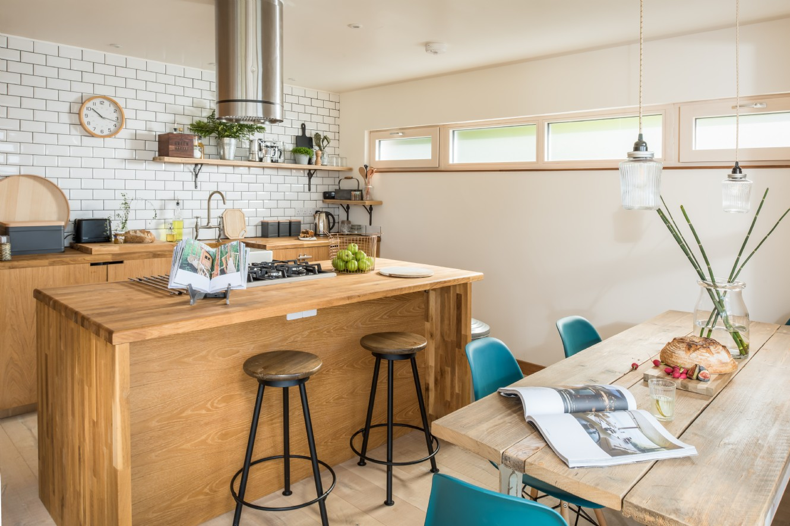
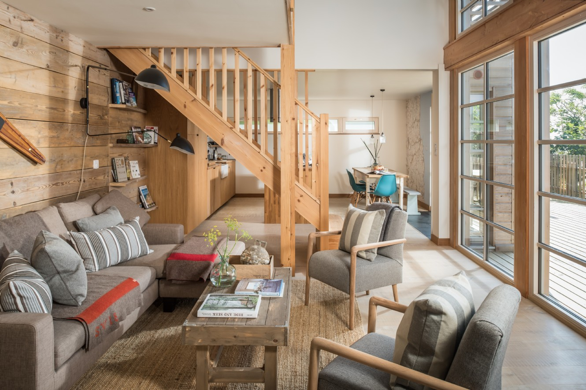
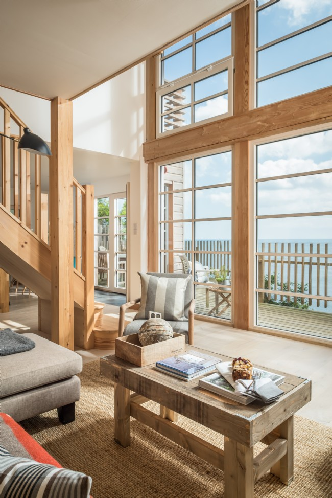
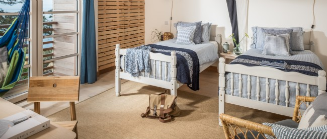
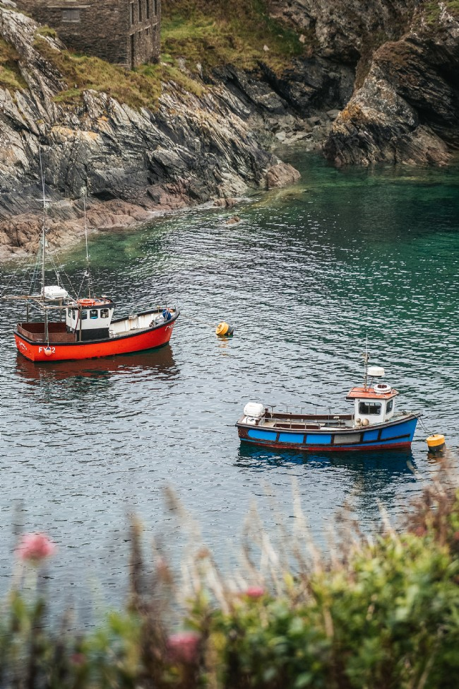
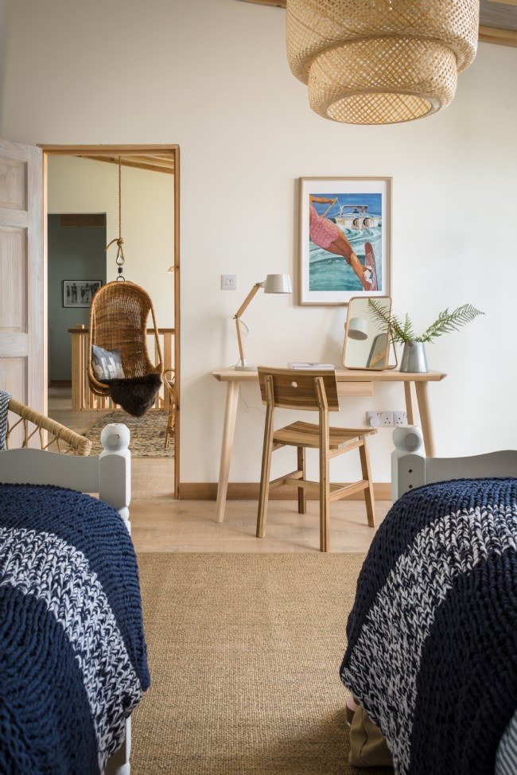
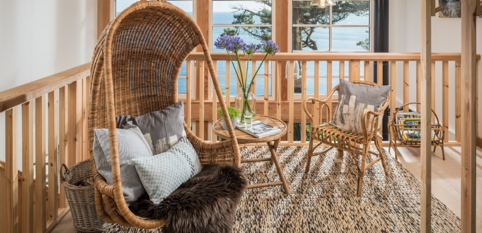
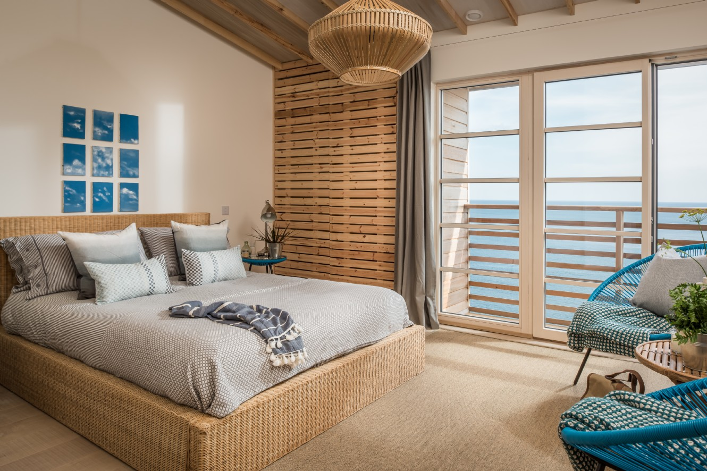
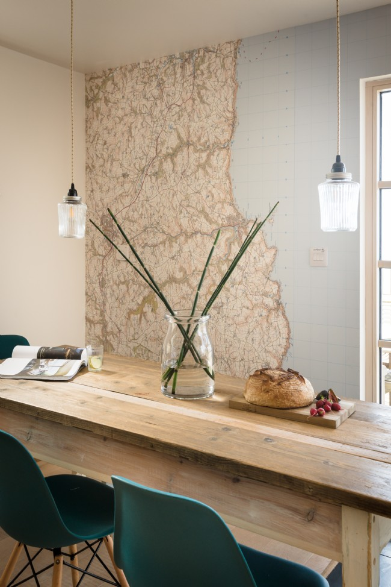
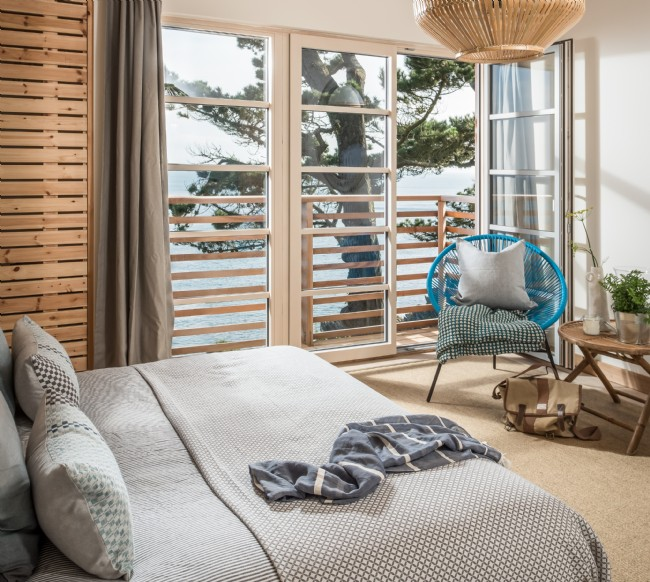
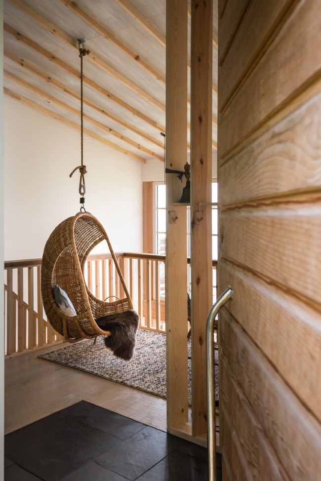
Pollpero
Autentická malá rybářská vesnička zastrčená na jihovýchodním pobřeží Cornwallu, Polperro má silnou námořní historii a vyzařuje kouzlo cornwallského pobřeží, zasazené kousek od pobřeží od rušnějšího přístavního města Fowey.
PODÍVAT SE NA MAPĚ
Co v Polperru?
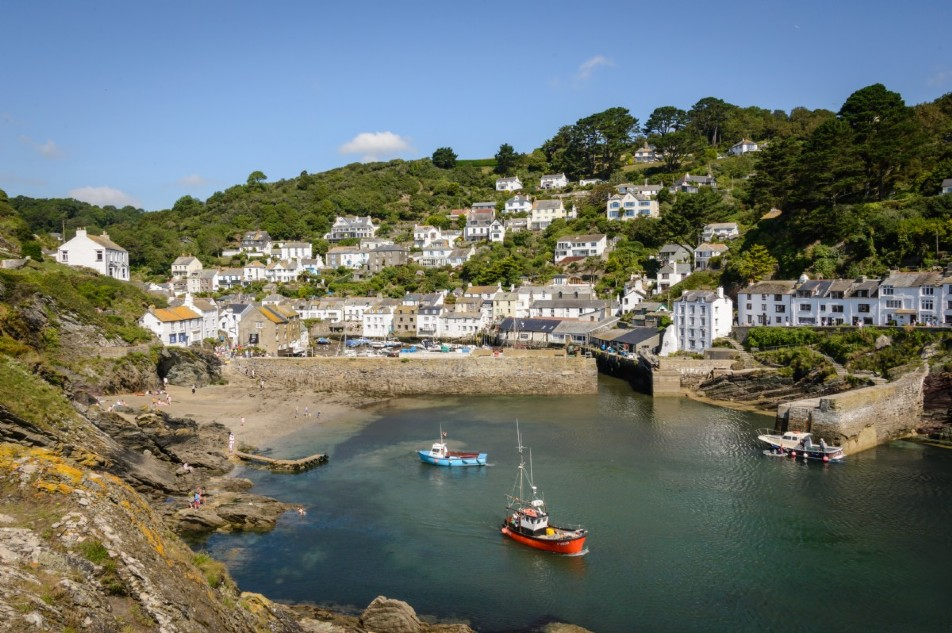
Restaurace Stará půda je spolehlivým znamením dobré restaurace, kterou doporučují všichni lidé, kterých se v místě zeptáte. Nachází se také v jedné z nejstarších budov v Looe, která je stále z velké části zachována a pochází z doby nejméně 450 let.